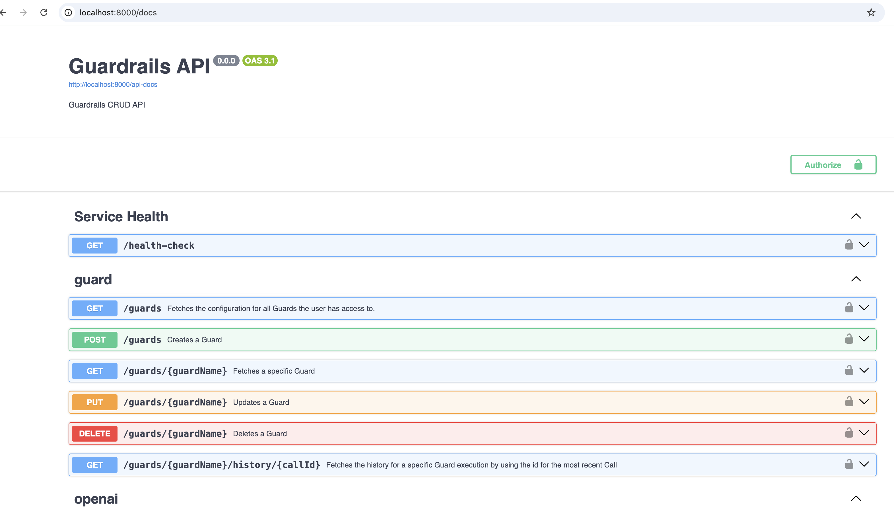
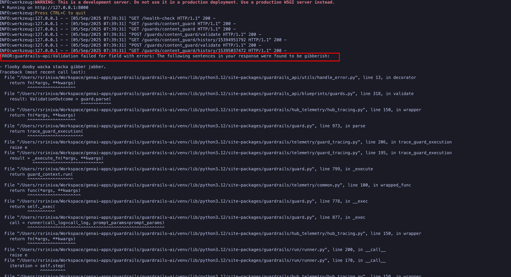

Lab: Centralizing Guardrails Enforcement with Guardrails AI Server
In the previous exercises, you embedded the Guardrails AI library directly in your application. While this approach works for one-off applications, it becomes difficult to manage multiple different AI applications which need Guadrails functionality. A centralized approach makes sense in such a scenario. In this hands-on lab, you will create a Guardrails AI server and configure it with Guards, validators and associated configuration and expose it for external applications as a REST API.
See Why a client/server model? on the Guardrails AI website for the rationale.
You will use the guardrails CLI to create a server stub and configure it with Guards and validators. The server stub is a file named config.py, a plain Python file.
|
Pre-requisites
-
Python v3.12 (The labs in this course were tested with Python 3.12 on macOS. Note that Python >3.12 is not supported for now)
-
The
pipCLI to install Python libraries. -
Git CLI to clone the sample code from GitHub
-
Visual Studio Code or other editors to edit Python code
-
You should have created an account at the Guardrails AI Hub (https://hub.guardrailsai.com), and created an API key as outlined in the first hands-on lab exercise in this course
-
You should have a working
guardrailsCLI command configured to use your Guardrails Hub API key to download validators
Steps
-
If you have not already done it, clone the Git repository containing the code to a folder of your choice.
$ git clone https://github.com/RedHatQuickCourses/genai-apps.git -
All the code for Guardrails AI is in a folder called
guardrails/guardrails-ai. Change to this folder in the terminal.$ cd genai-apps/guardrails/guardrails-ai -
Activate the virtual environment you created previously
$ source venv/bin/activateYour prompt should change to indicate that you are now running in an isolated virtual environment.
-
Use the
guardrails createcommand on the terminal to generate the server stub file. Use the same validators as the stacked validators lab.$ guardrails create \ (1) --validators hub://guardrails/profanity_free, \ (2) hub://guardrails/competitor_check, \ (2) hub://guardrails/gibberish_text \ (2) --guard-name content_guard (3) ... Installing hub://guardrails/profanity_free... Installing hub://guardrails/competitor_check... Installing hub://guardrails/gibberish_text... ... Success! Generating config file... Saved configuration to config.py Replace TODOs in config.py and run withguardrails start --config config.py1 Use the create command in the guardrailsCLI to create a server stub2 Add the validators needed for your applications. 3 A unique guard name. You can create multiple such guards for sets of applications requiring particular validators -
The previous command will generate a file named
config.pyin the same directory. Inspect the defaultconfig.pyfile in a text editor of your choice. The file contains the validator declarations that you provided in the CLI, along with some placeholder TODOs instructing you to remove and change code to configure the validators.from guardrails import Guard from guardrails.hub import ( ProfanityFree, CompetitorCheck, GibberishText ) guard = Guard() guard.name = 'content_guard' print("GUARD PARAMETERS UNFILLED! UPDATE THIS FILE!") # TODO: Remove this when parameters are filled. guard.use_many( ProfanityFree(), # TODO: Add parameters. CompetitorCheck(), # TODO: Add parameters. GibberishText(), # TODO: Add parameters. ) ... -
Replace the code in the
config.pywith the following code. We install the validators, and configure theGuardwith the same validators and parameters as in the stacked validators lab.# Import Guard and Validators from guardrails import Guard, install install( "hub://guardrails/gibberish_text", install_local_models=True, quiet=False ) install( "hub://guardrails/profanity_free", install_local_models=True, quiet=False ) install( "hub://guardrails/competitor_check", install_local_models=True, quiet=False ) from guardrails.hub import ProfanityFree, GibberishText, CompetitorCheck guard = Guard() guard.name = 'content_guard' guard.use_many( ProfanityFree(), CompetitorCheck(competitors=["Microsoft", "Oracle"]), GibberishText(threshold=0.5, validation_method="sentence") ) -
There is a bug in the Guardrails server which prevents it from starting. Do the following in the virtual environment before starting the server.
$ (venv) pip install guardrails-api==0.0.5 -
Unfortunately, there is yet another bug in the dependency resolution that you need to take care of before starting the server. The
guardrails-apipackage you installed in the previous step will roll back theguardrails-aiversion back to 0.5.x. Re-install theguardrails-aiversion and pin it to version0.6.6$ (venv) pip uninstall guardrails-ai $ (venv) pip install guardrails-ai==0.6.6 -
Now, you can start the Guardrails AI server. Do not close the terminal window. You can use
Ctrl+cto stop the server after the lab is complete.$ (venv) guardrails start --config config.py ... üöÄ Guardrails API is available at http://localhost:8000 üìñ Visit http://localhost:8000/docs to see available API endpoints. üü¢ Active guards and OpenAI compatible endpoints: - Guard: content_guard http://localhost:8000/guards/content_guard/openai/v1 ... * Running on http://127.0.0.1:8000 INFO:werkzeug:Press CTRL+C to quitIf the server fails to start due to timeouts or network jitter when downloading the validators from the hub, then try restarting the server. -
Using a web browser, navigate to
http://localhost:8000/docsto view the REST API documentation for the server. The Guardrails AI library parses theconfig.pyfile and provides a Swagger/OpenAPI style implementation of the documentation, plus associated REST services on port8000by default.Figure 1. Guardrails AI server Swagger UI -
Your REST API is now ready to accept client requests. In the next few steps, you will inspect the code in the
gai-client.pyfile. It acts as a client application that invokes the guards on the server. The Guardrails AI library takes care of all the conversion (marshalling and unmarshalling) between JSON and raw Python objects.The
main()method starts off by checking if the Guardrails AI server is running. The server conveniently exposes ahealth-checkendpoint on the default port to let clients know if the server is running.def main(): # Verify if Guardrails AI server is running print("\nCheck if Guardrails AI server is running...") try: import requests response = requests.get("http://localhost:8000/health-check") if response.status_code != 200: print("❌ Guardrails AI server is not running!") print("Start it with: guardrails start --config config.py") return else: print("✅ Guardrails AI server is running") except: print("❌ Cannot connect to Guardrails AI server!") print("Start it with: guardrails start --config config.py") returnIf the server is running, then the
test_gai_server()method is called. -
The
test_gai_server()method invokes thecontent_guardyou configured on the server side. The Guardrails AI library takes care of automatically locating the named guard and then serializing/de-serializing the JSON body from the REST API into validGuardobjects on the client in a transparent manner. This saves you the effort of manually parsing and creating theGuardobjects.... from guardrails import Guard from guardrails.errors import ValidationError ... try: guard = Guard.fetch_guard( name="content_guard", base_url="http://localhost:8000", )If you want to avoid importing Python classes from the guardrails-ailibrary in your client, you can directly invoke the OpenAI AI-compatible endpoint using therequestslibrary and manually parse the JSON for further processing before you invoke the validator. See https://www.guardrailsai.com/docs/getting_started/guardrails_server#4-update-client-to-use-the-guardrails-server for this manual approach.Observe how the environment variable GUARDRAILS_BASE_URLis being set to point to the URL of the Guardrails AI server.... os.environ["GUARDRAILS_BASE_URL"] = "http://localhost:8000" ... -
Once the
Guardobject is constructed, you simply invoke thevalidate()method on the Guard and pass it the text you want to validate. In our case, we have a list of messages we want to validate, and we loop through them one by one and invoke thevalidate()method.... test_responses = [ "The quick brown fox jumps over the lazy dog.", # Valid response "AI and machine learning are transforming industries.", # Another Valid response "flooby dooby wacka stacka gibber jabber.", # Gibberish test "Damn. My bet went to hell.", # Profanity test "The oracle at Delphi saw visions", # competitor check false positive "ibm and oracle are the top enterprise databases" # competitor check should trigger ] ... for i, text in enumerate(test_responses, 1): print(f"\nTest {i}: '{text}'") try: result = guard.validate(text) print(f" ✅ PASSED: {result.validation_passed}") if hasattr(result, 'validation_summaries'): print(f" Details: {result.validation_summaries}") except ValidationError as ve: print(f" ❌ FAILED: {ve}") except Exception as e: print(f" ⚠️ ERROR: {e}") except Exception as e: print(f"Failed to connect to guard: {e}") -
Run the
gai-client.pyfile in a new terminal. Do not forget to activate your Python virtual environment, where all the Guardrails AI library dependencies are installed. Your Guardrails AI server should be running as outlined in the previous steps.$ (venv) python gai-client.py Check if Guardrails AI server is running... ✅ Guardrails AI server is running === Guardrails AI Server Testing === Test 1: 'The quick brown fox jumps over the lazy dog.' ✅ PASSED: True Details: [] Test 2: 'AI and machine learning are transforming industries.' ✅ PASSED: True Details: [] Test 3: 'flooby dooby wacka stacka gibber jabber.' ❌ FAILED: {"detail":"Validation failed for field with errors: The following sentences in your response were found to be gibberish:\n\n- flooby dooby wacka stacka gibber jabber.","status_code":400} Test 4: 'Damn. My bet went to hell.' ❌ FAILED: {"detail":"Validation failed for field with errors: Damn. My bet went to hell. contains profanity. Please return profanity-free output.","status_code":400} Test 5: 'The oracle at Delphi saw visions' ✅ PASSED: True Details: [] Test 6: 'ibm and oracle are the top enterprise databases' ❌ FAILED: {"detail":"Validation failed for field with errors: Found the following competitors: oracle. Please avoid naming those competitors next time","status_code":400}Validations that passed do not display any details, while the ones that failed will display the reason for rejection. Note how the competitor check is contextually aware of the words in a sentence, so the word
"oracle", when used as a noun in the sentence"The oracle at Delphi saw visions,"does not cause the validator to fail.Uncomment the line
print(result)on line32if you want to debug the code. The server terminal also displays the logs from the server side.Figure 2. Guardrails AI server logs